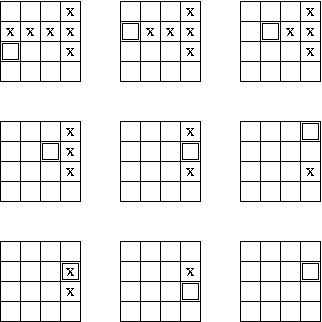

Your son Andy has a (normal, six-sided) die that is exactly the same size as a grid square. You decide to play a game. First, you place the die precisely on a single tile with no fleas. Then you start rolling the die over an edge onto one of the adjacent tiles. The fleas are very curious; they like to explore. Whenever you move a die onto a square containing a flea, it jumps to the bottom of the die. The fleas are small enough to hide in the recesses formed by the dots on the die, so they wont be killed in the process. Similarly, if a flea is on the side of a die that is moved to the floor, it jumps from the die to the tile.
The goal of your game is to move the die in such a manner that all fleas end up sitting on the die. The die can not leave the 4x4 grid that is your kitchen. An example of a solution for the first sample input follows:

The first line of input indicates the number of test cases to follow. Each test case consists of a blank line followed by
4 lines of 4 characters which describes the initial grid configuraion.
A '.' denotes an empty square, an 'X' denotes
a flea, and a 'D' indicates the initial position of the die. There will always be exactly one 'D'
and exactly six 'X' characters in each test case.
For each test case, output a line containing a single number:
the minimum number of moves that are required to get a flea on every face of the die at the same time.
If a case has no solution, output the word impossible instead.
2 ...X XXXX D..X .... DX.X .X.. ..X. X..X
8 14